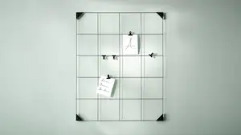

Decoratie
- Sla lijst over
- Wanddecoratie
- Bloemen & planten
- Dozen & manden
- Bloempotten
- Spiegels
- Kaarshouders & kaarsen
- Vazen & schalen
- Memo- & prikborden
- Decoratieve accessiores
- Inpakpapier & kantoorartikelen
- Klokken
- Geurstokjes & potpourri
Je woonstijl met favoriete decoratie.
Thuis kom je tot rust, een plek waar je jezelf kan zijn. En waar je je eigen tempo bepaalt. Maak het gezellig en creëer ruimte voor nieuwe gewoontes. Omring je met je favoriete decoratie. Geurende kaarsen, extra kussens en een fijn kleed. Kies voor landelijke decoratie van natuurlijke materialen of ga voor stoere woonaccessoires met een print. Jij bepaalt je eigen ritme, je eigen woonstijl.

Haal de natuur binnen met decoratie
Van vazen tot bloempotten. Van kussens tot wanddecoratie. Haal de natuur naar binnen met groene decoratie en natuurlijke materialen voor meer frisheid en harmonie. Of zorg juist voor meer rust in je huis met planten en bloemen. Bepaal je eigen ritme en breng je eigen stijl tot leven met de woondecoratie van IKEA.